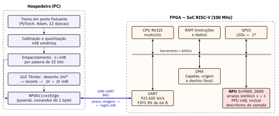

Servidores da NPU¶
Os servidores são programas do SoC que atendem um cliente no computador hospedeiro: recebem modelos e dados pela UART, executam o cálculo na NPU e devolvem os resultados. A divisão de trabalho é sempre a mesma: o hospedeiro treina e quantiza; o SoC só executa a inferência.

| Servidor | Cliente | Função |
|---|---|---|
cnn_server.c |
tools/cnn_client.py |
Inferência de uma CNN para o MNIST, com interface de desenho |
cnn_server_bluetooth.c |
tools/cnn_client.py (porta do Bluetooth) |
O mesmo servidor, pela UART2 e uma ponte Bluetooth |
bench_server.c |
tools/bench_client.py, tools/bench_v2.py |
Benchmark da NPU contra a CPU |
Servidor da CNN (cnn_server.c)¶
O servidor executa uma rede convolucional para dígitos manuscritos: uma convolução \(3\times3\) com passo 2 e 4 filtros, seguida de ReLU e de uma camada densa \(676\to10\). A rede inteira roda na NPU, com os mecanismos de movimentação de dados ligados: pesos e vieses residentes, im2col em hardware, modo GEMV na camada densa, fusão das duas camadas e um programa de descritores que configura a NPU sem a CPU.
Protocolo¶
O cliente envia um byte de comando seguido dos dados, e o servidor responde com uma letra de confirmação ou com os resultados. Os inteiros de 32 bits trafegam em ordem big-endian.
| Comando | Dados (hospedeiro → SoC) | Resposta |
|---|---|---|
0xAA |
9 palavras: filtros da convolução empacotados (4 filtros por palavra) | 'A' |
0xBB |
4 × int32: vieses da convolução | 'B' |
0xCC |
2.028 palavras: pesos da camada densa empacotados (3 blocos de 4 neurônios × 676) | 'C' |
0xDD |
12 × int32: vieses da camada densa (os dois últimos são zero) | 'D' |
0xFF |
784 bytes: imagem \(28\times28\), linha a linha, com pixels de 0 a 127 | 10 × int8: logits |
A carga do modelo (0xAA a 0xDD) acontece uma única vez; os pesos ficam residentes nas memórias da NPU. A cada imagem (0xFF), a CPU envia por DMA o programa de descritores e a imagem crua, lê os 10 logits, acende o LED do dígito previsto e o mostra no display.
Desempenho¶
A NPU executa a rede inteira em cerca de 1.500 ciclos (15 µs a 100 MHz). Uma inferência pelo cliente, do envio da imagem à chegada dos logits, leva cerca de 9 ms, quase todos gastos na transmissão serial: o cálculo é menos de 0,2% do tempo. A análise completa, com o treino, a quantização e as medições na placa, está no estudo de caso da documentação da NPU.
Cliente (tools/cnn_client.py)¶
O cliente treina a rede com PyTorch, quantiza os pesos para INT8, envia o modelo e abre uma janela em que o usuário desenha um dígito com o mouse. A cada traço, o desenho é recortado, reduzido a \(28\times28\) e enviado ao SoC, e a janela mostra o dígito previsto e a latência.
make upload SW=cnn_server
python3 tools/cnn_client.py # porta configurada em SERIAL_PORT, no início do arquivo
Servidor por Bluetooth (cnn_server_bluetooth.c)¶
O mesmo servidor, com o mesmo protocolo, atendendo pela UART2 no Pmod JA. Um ESP32 ligado ao Pmod faz a ponte entre a UART2 e o Bluetooth clássico (SPP), e o cliente só troca a porta serial pela do Bluetooth. A UART do USB fica livre para depuração: o servidor escreve nela o dígito de cada inferência.
Servidor de benchmark (bench_server.c)¶
O servidor de benchmark mede a NPU contra a CPU, com os ciclos contados pelo temporizador do CLINT. Cada resultado da NPU é recalculado pela CPU e comparado byte a byte.
| Comando | Função |
|---|---|
'B' |
Benchmark original: produto de matrizes \(4\times K\) por \(K\times4\), com esparsidade configurável |
'P' |
Variante com vários tiles em sequência |
'X' |
Benchmark v2: um experimento parametrizado (camada densa ou convolução, com cada mecanismo da NPU ligado ou desligado) e autovalidado |
O tools/bench_v2.py conduz os experimentos do benchmark v2 e gera as figuras:
| Experimento | Conteúdo |
|---|---|
| E1 | Validação: todas as configurações, sem divergências |
| E2 | Varredura de intensidade operacional (roofline) |
| E3 | Ablação nas camadas da CNN: cumulativa e "deixa um de fora" |
| E4 | Esparsidade: NPU e CPU em função da fração de zeros |
| E5 | CNN completa, com fusão de camadas, vieses residentes e descritores |
| E6 | Produto de matrizes \(4\times K\), NPU base e otimizada |
| E7 | Por tipo de operação: convolução e camada densa |
python3 tools/bench_v2.py --upload build/fpga/bin/bench_server.bin --port /dev/ttyUSB1
python3 tools/bench_v2.py --replot --out build/bench_v2 # refaz as figuras a partir do CSV
Os resultados estão em Desempenho da NPU e no benchmark dos mecanismos, na documentação da NPU.